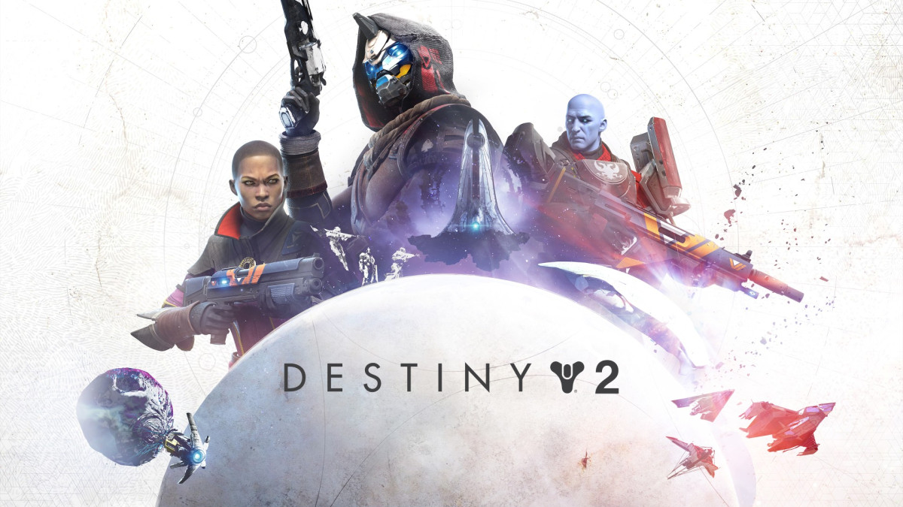

Como jugador nuevo de Destiny 2, es importante que sepas que se trata de un juego de disparos en primera persona en línea de mundo compartido. Esto significa que jugarás con otros jugadores en línea en un mundo persistente y en constante evolución.
El objetivo principal del juego es crear y personalizar a tu personaje, conocido como Guardián, y completar misiones y
actividades para mejorar sus habilidades y obtener mejores armas y equipo. A medida que avances en el juego, también tendrás la
oportunidad de unirte a otros jugadores en misiones cooperativas y enfrentarte a desafíos más difíciles en equipos más grandes.
Destiny 2 también tiene un enfoque en la narrativa, con una historia épica que se desarrolla a lo largo del juego y misiones que
te llevarán a través de planetas y sistemas solares enteros. Además, el juego se actualiza constantemente con nuevo contenido,
eventos especiales y temporadas, lo que significa que siempre habrá algo nuevo que descubrir.
En resumen, Destiny 2 es un juego emocionante y en constante evolución que ofrece una experiencia de disparos en primera persona
en línea única y que te permitirá crear y personalizar tu personaje para enfrentar desafíos junto a otros jugadores.
¡Bienvenido al universo de Destiny 2!

 De que trata Destiny 2?! Haz clic aquí y descúbrelo
De que trata Destiny 2?! Haz clic aquí y descúbrelo